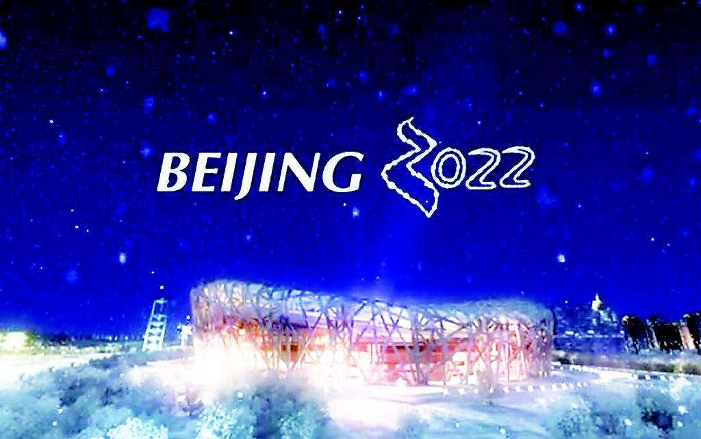
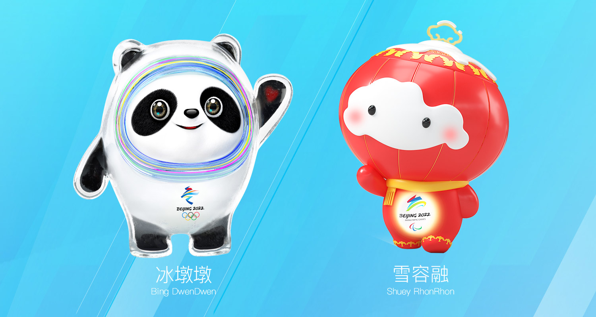
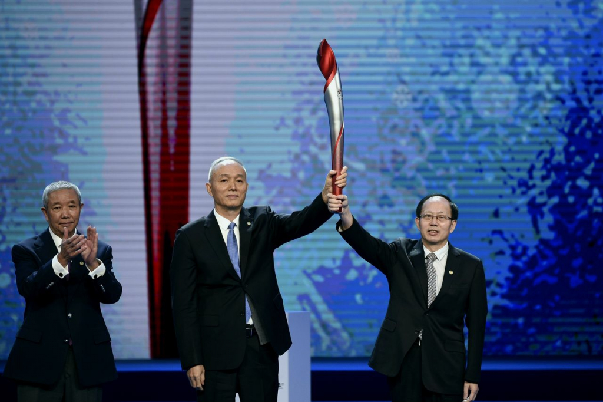

北京冬季奥运会-简介:
第24届冬季奥林匹克运动会（The XXIV Olympic Winter Games），即2022年北京冬季奥运会，计划于2022年2月4日星期五开幕，2月20日星期日闭幕。北京冬季奥运会设7个大项，15个分项，109个小项。北京赛区承办所有的冰上项目；延庆赛区承办雪车、雪橇及高山滑雪项目；张家口赛区的崇礼区承办除雪车、雪橇及高山滑雪之外的所有雪上项目。
2021年9月17日，北京冬奥会、冬残奥会发布主题口号——“一起向未来”。10月18日，北京冬奥会火种在希腊成功点燃。10月20日，北京冬奥会火种抵达北京 。
2021年10月31日消息，北京2022年冬奥会和冬残奥会志愿者招募工作基本完成，赛会志愿者培训工作全面展开。11月15日，2022年冬奥会和冬残奥会主题口号推广歌曲《一起向未来》全新MV在全平台正式上线。
北京冬季奥运会-吉祥物：
2019年9月17日晚，2022年北京冬奥会和冬残奥会吉祥物在北京市石景山区首钢园区国家冬季运动训练中心冰球馆揭开神秘面纱。北京冬奥会吉祥物名为“冰墩墩”，形象来源于国宝大熊猫。冬残奥会吉祥物“雪容融”，形象来源于中国传统文化符号大红灯笼。
熊猫是世界公认的中国国宝，形象友好可爱、憨态可掬，深受各国人民尤其是青少年的喜爱。
北京冬奥会吉祥物“冰墩墩”以熊猫为原型进行设计创作。将熊猫形象与富有超能量的冰晶外壳相结合，体现了冬季冰雪运动和现代科技特点。头部外壳造型取自冰雪运动头盔，装饰彩色光环，其灵感源自于北京冬奥会的国家速滑馆——“冰丝带”，流动的明亮色彩线条象征着冰雪运动的赛道和5G高科技；左手掌心的心形图案，代表着主办国对全世界朋友的热情欢迎。整体形象酷似航天员，寓意创造非凡、探索未来，体现了追求卓越、引领时代，以及面向未来的无限可能。
灯笼，具有鲜明的中国文化特色，有着2000多年的悠久历史，是世界公认的“中国符号”。它是欢乐喜庆节日气氛和 “瑞雪兆丰年”美好寓意的完美结合，表达了共同参与、共同努力、共同享有的办奥理念。
北京冬残奥会吉祥物“雪容融”以灯笼为原型进行设计创作。灯笼代表着收获、喜庆、温暖和光明。顶部的如意造型象征吉祥幸福；和平鸽和天坛构成的连续图案，寓意着和平友谊，突出了举办地的特色；装饰图案融入了中国传统剪纸艺术；面部的雪块既代表“瑞雪兆丰年”的寓意，又体现了拟人化的设计，凸显吉祥物的可爱。灯笼以“中国红”为主色调，渲染了2022年中国春节的节日气氛，身体发出光芒，寓意着点亮梦想，温暖世界，代表着友爱、勇气和坚强，体现了冬残奥运动员的拼搏精神和激励世界的冬残奥会理念。

北京冬季奥运会-火炬：
2月4日晚，北京冬奥会倒计时一周年活动在国家游泳中心“冰立方”举行。北京2022年冬奥会、冬残奥会火炬外观设计正式对外发布。
北京冬奥会火炬“飞扬”外形极具动感和活力，颜色为银色与红色，象征冰火相约，激情飞扬，照亮冰雪，温暖世界。北京冬残奥会火炬则选用银色与金色，寓意辉煌与梦想，体现“勇气、决心、激励、平等”的残奥价值观，火炬最下方一圈刻有“北京2022年冬残奥会”全称的盲文。
火炬整体外观与北京2008年奥运会开幕式主火炬塔形态相呼应，以祥云纹样“打底”，自下而上过渡到剪纸风格的雪花图案，旋转上升，如丝带飘舞。火炬交接时，顶部可以紧密相扣。
2021年10月18日，北京冬奥会火种在奥林匹克运动的发祥地——希腊伯罗奔尼撒半岛的古奥林匹亚采集成功。在有着两千多年历史的赫拉神庙遗址前，奥运火种再次为北京点燃。
2021年10月19日，北京冬奥会火种交接到北京冬奥组委副主席于再清手中，火种交接仪式顺利完成。20日清晨，随着北京冬奥组委赴希腊代表团抵达首都机场，北京2022年冬奥会火种顺利抵达北京。火种欢迎仪式于20日上午举行，李佳军任北京冬奥会火炬传递中国第一棒火炬手。